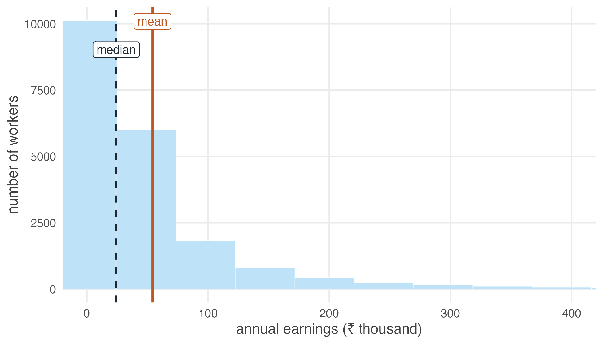

1.9 The average is not the distribution
And what does an average hide?
Before leaving this unit, one qualification deserves attention.
Almost all of inferential statistics concerns averages. Most of the methods in this book estimate a mean, compare two means, or fit a line through conditional means. That emphasis is not arbitrary: means are well behaved, their sampling distributions are tractable, and both of the results we have just studied are statements about them.
The mean, however, is only one feature of a distribution, and frequently not the feature that a policy question concerns.
#> mean median
#> 54181 24220#> [1] 2.237The mean is more than twice the median. When those two diverge that sharply, the average has stopped describing a typical worker.

Figure 1.11: Annual earnings of 20,000 Indian workers. The mean sits far to the right of most people, dragged there by a thin tail of high earners.
How concentrated is it?
top10 <- earn[earn >= quantile(earn, 0.90)]
round(100 * sum(top10) / sum(earn)) # % of all earnings, top tenth#> [1] 49#> 90%
#> 5.2The best-paid tenth of workers take a large share of all earnings, and the threshold for entering that tenth is several times the median wage.
Consider what “average earnings in India” is able to answer.
For total earnings it is exact: the mean multiplied by the number of workers is the total, by construction.
For the earnings of a typical worker it is misleading. Very few people earn anything close to the mean, and most earn considerably less.
For whether a policy has helped it can be actively deceptive. If the gains accrue at the top, the mean may rise while the majority are worse off. An average can move in the opposite direction to almost everyone within it.
Ask two questions of every average you meet, including your own:
- What is the spread? A mean with no measure of dispersion is half a sentence.
- Who is where? Means are the wrong tool for questions about the bottom of a distribution — poverty, vulnerability, who is hurt by a shock. Those are questions about tails, and the mean is precisely the statistic that averages tails away.
This is not a philosophical aside; it changes what you estimate. Whole literatures in development economics exist because the mean was the wrong target. Poverty measures weight the poor rather than averaging over everyone. Vulnerability measures ask who is at risk of falling below a line. Distributional analysis asks whether a policy that raised average income raised the income of anyone who was badly off to begin with.
We will return to this repeatedly. When we fit a regression we will be modelling a conditional mean, and it will be worth asking each time what that choice conceals. When we reach binary explanatory variables and estimate an average treatment effect, the word “average” in that phrase will deserve every bit of suspicion you can bring to it.
None of this makes averages bad. They are the right tool for a great many questions, and this book spends most of its length on them for good reason.
It means an average is an answer to a specific question, not a neutral summary of the data. Decide which question you are asking before deciding the mean answers it.